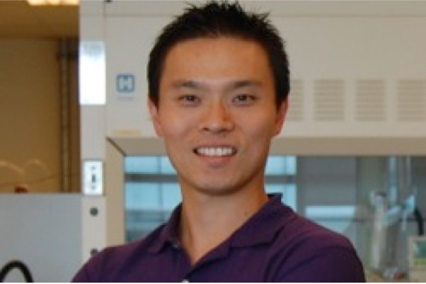

Assistant Professor
Ph.D., University of Toronto
M.Sc., University of Ottawa
B.A.Sc., University of Toronto
Dr. Shih is an Assistant Professor in the Department of Electrical and Computer Engineering at Concordia University and is affiliated with the Center for Applied Synthtetic Biology (CASB). His research is interfacing biology, chemistry, and engineering to solve problems in matters of health and energy. His central focus is to develop microfluidic technology to automate the synthetic biology process to expedite the synthetic biology cycle of "design-build-test-learn". We will use these novel devices to decipher mechanisms that are important for producing biofuel and antibody development. Dr. Shih has pioneered numerous microfluidic technologies and published in leading scientific journals such as Lab on Chip, Energy and Environmental Science, and ACS Synthetic Biology. His work have been highlighted broadly by news sources such as Chemistry and Engineering News, IEEE Life Sciences Newsletter, Scientific American, and Chemistry World.
Dr. Shih earned his BASc in Electrical Engineering from the University of Toronto, his MSc in Chemistry from the University of Ottawa with Natalie Goto, and his Ph.D from the University of Toronto with Aaron Wheeler. He conducted his postdoctoral studies at the Joint BioEnergy Institute with Nathan Hillson and Jay Keasling. For his work, Dr. Shih has been awarded multiple awards, such as the NSERC Fellowship, Ontario Graduate Scholarship, and has been awarded multiple patents.